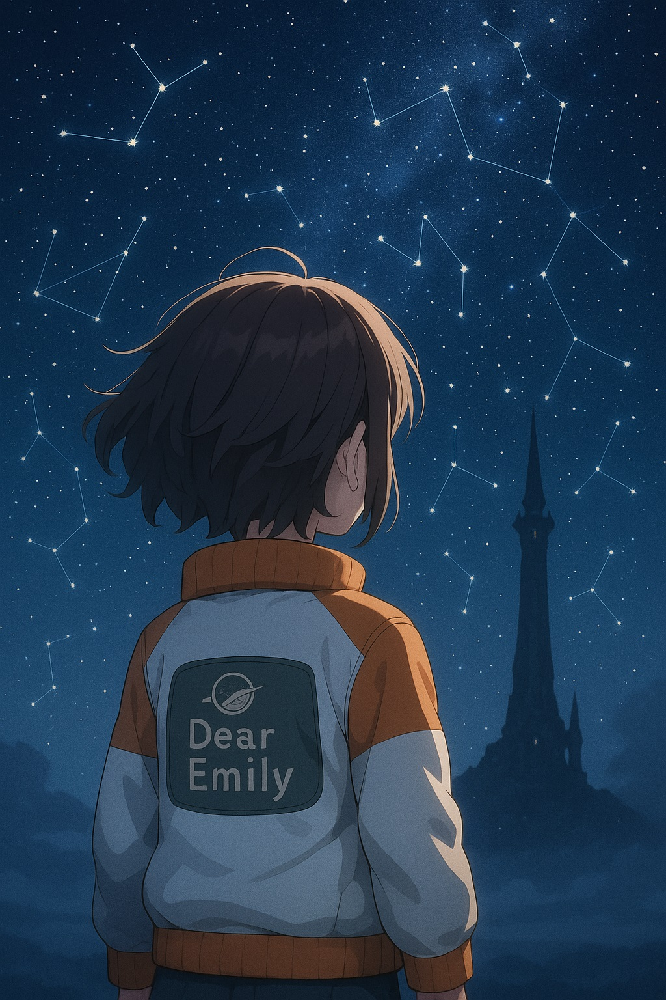
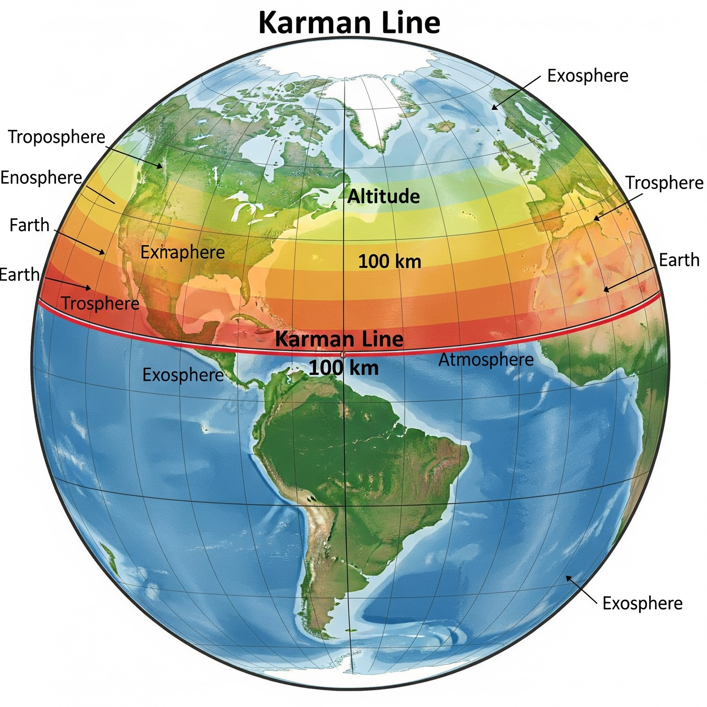

🌟宇宙ってどこから始まるの？
〜エミリーと探す「空のその先」〜

星空の向こうに、何が待ってるんだろう。エミリーの冒険が始まる。
ねえ、エミリー。
晴れた日の午後、空を見上げたことってある？雲がふわふわ浮かんでたり、鳥が羽ばたいていたり、飛行機がゆっくりと横切ったり…。私たちの頭の上には、そんなにぎやかな「空の世界」が広がっているよね。
でも、そのもっともっと上――雲も風も届かない、その先にはね、「**宇宙（うちゅう）**」って呼ばれる、ちょっと不思議でとっても広い世界があるんだよ。
まるで物語のページをめくるように、空の向こう側には、新しい冒険が待っているの。
今日はその入り口を、こっそり一緒にのぞいてみようか🌌
🌌 宇宙って、どんな場所？

まるで宝石箱みたいにキラキラしてるね！
宇宙は、空気がなくて、音がしない、とても静かな場所なんだ。
地球では風がふいたり、鳥の声が聞こえたり、音があふれているけど、宇宙ではそれが全部消えちゃうの。
**音は空気がないと伝わらないから**ね。
昼も夜もない。太陽の光が当たるところはまぶしくて、影の部分は真っ暗。 そんな「**光と闇のコントラスト**」が、宇宙らしさでもあるんだよ。
🚀 宇宙は、どこから始まるの？
この線を越えたら、宇宙飛行士の仲間入り！
「宇宙って、どこからが“宇宙”なの？」
その答えは、地球の表面から**約100km上**にある「**カーマン・ライン**」。
ここを越えると、「宇宙に出た」とみなされるの。
東京から静岡くらいの距離を真上に進んだ場所。
そう思うと、宇宙って、意外とすぐそこにあると思わない？
🌠 『ふしぎの海のナディア』と宇宙の旅
ナディアたちも、きっと宇宙の神秘に魅せられたはず。
『ふしぎの海のナディア』では、ナディアたちが未知の世界へと旅に出るよね。
空、海、そしてその先――。宇宙って、そんな**“まだ見ぬ世界”そのもの**なんだ。
『宇宙よりも遠い場所』の女の子たちも、南極という憧れに向かって旅をしたね。
その姿はまるで、宇宙を目指す冒険者たちのよう。
エミリーも、きっとそうなれるよ。
🌍 宇宙を知るって、どうして大切なの？
宇宙を知ると、地球のことがもっと特別に思えるようになるの。
「水がある」「空気がある」「生命がある」――それが、どれほど奇跡的なことかって、宇宙を知れば知るほど感じるんだよ。
そしていつか、エミリーが宇宙に行きたくなったときのために。
今からちょっとずつ冒険の準備、始めてみよう♪
✨ まとめ：宇宙への最初の一歩
宇宙って、とっても遠いようで、実はすぐ隣にあるんだ。
たった100kmのその先には、星の海が広がっている。
これから一緒に、Dear Emilyの宇宙探検をはじめよう。
星の地図を手に、次に出会う星を探しに行こうね――。
今日の宇宙の神秘 - Astronomy Picture of the Day
コンテンツを読み込み中...